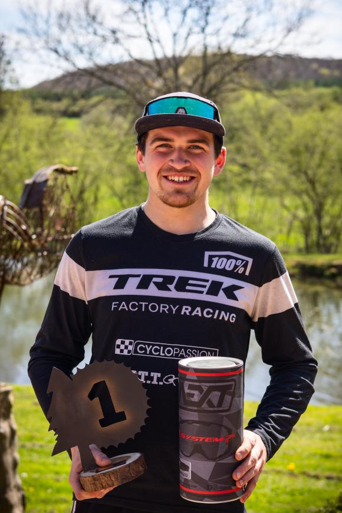

Bienvenue à tous les riders ! On lance officiellement notre premier maillot. Roulez piquant !

Émilien Serpaggi – Rider Niglo Bike
Émilien est l’un des riders les plus prometteurs de la scène. Connu pour sa technique, son engagement et son flow, il représente fièrement Niglo Bike sur les sentiers comme sur les podiums. Ce n’est que le début !